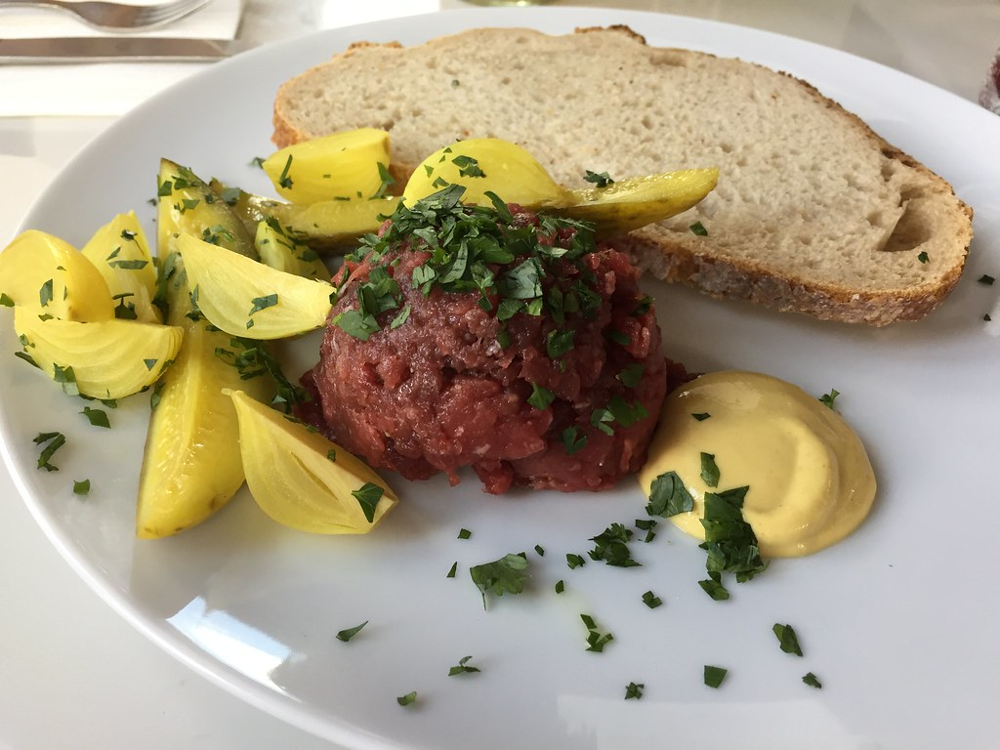

Steak Tartare Recipe

What will you accomplish with this recipe?
An oily steak tartare oozing with flavor, clamoring to be eaten, enjoyed,
and ravished.
Ingredients
- 8-10 ounces of top sirloin
- Fleur de Sel
- Your choice of spices
- 2 Tbsp minced shallots
- 2 Tbsp minced cornichons
- 2 Tbsp minced capers
- 1 large egg yolk
- Dijon mustard
- Worcestershire sauce
- Kampot red pepper
- Chives
Steps
- Lightly salt the steak on both sides. Using a sharp knife on a
clean cutting board slice the steak into thin slices (as thin as you can easily manage).
- Turn the cutting board 90 degrees, season with a few big pinches of
your choice of spices, and cut the slices again. Continue to chop the steak from different
angles until the texture is to your liking.
- In a small bowl mix together the steak, shallots, pickles, capers,
and egg yolks, along with a teaspoon each of Dijon mustard and Worcestershire sauce. Taste
and adjust to your liking with more salt, spice, or condiment.
- Garnish with finely ground Kampot and fresh chives. Serve with more
mustard, toasted bread and/or slivers of Belgian endive.
Recipe credits to La Boite
Back to homepage